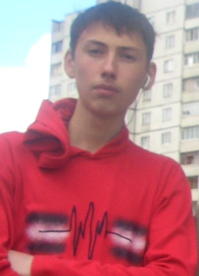

Это реконструированный сайт topw3.narod.ru | Харьков 2005-2007

ФИО: М***** Геннадий *****ич
Дата рождения: **.**.19**
Место рождения: Украина, г. Черновцы
Никнейм: ToP|GRim
Раса в WarCraft III: Human
Дисциплины: WarCraft III TFT
О себе: Меня кликать Гена , прожил пока дето 16 лет надеюсь что проживу больше. Учусь в ХРТТ (Харьковский радиотехнический техникум). Играть в warcraft начал фонарём. Заставили… играл, пробывал за всех, но из-за глупого спора начал играть за Human. Прощаться не буду еще увидимся. Всем удачи!
Девиз: Играть нормально я не умею, но на лагах я король. Катайте все в War3 и наступит вам GL!

ToP)Grim выступал за клан ТоР в периоды с 02.2005-08.2005 и 03.2006-08.2006. В эти периоды принял участие в пяти чемпионатах (TGL, TJL:register cup, WCG2005:Kharkov, WCG Training cup, WCG2006:Kharkov) на которых смог выиграть одно призовое место (4-е место на TGL). Grim вышел из основного состава в августе 2006 и окончательно из клана- в декабре 2006. КЛан ТоР благодарит Grim-а за те тренировки и турниры, которые Grim провел за нашу команду и желает ему всего наилучшего в будущем).